在上一章，我们把分数转换为小数，接下来看一下
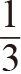
，这个数非常有意思：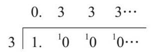
我们很快发现，计算结果一直在循环，即10除以3得3余1，这个过程一直在重复。我们把这种小数叫作循环小数，在某个数上面加点说明这个数一直在循环。
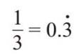
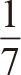
的计算则更有趣。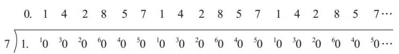
在这里，我们得到了一个重复序列。我们在序列的首尾数字上各加一个点来表示这个数：
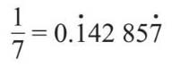
而且，每个以7为分母的分数的重复序列都是相同的，只是起始、终结数字有所不同：
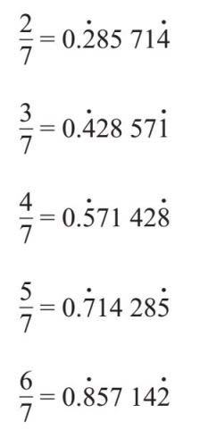
如果你也愿意挑战一下，可以试试把19为分母的分数转换成小数！
只要看一看分母，我们就可以判断它在转换成小数后，是会像上面那样无限循环，还是会得到有限的数位。要做到这一点不难，标准就是，把分母乘以某个数，看它是否能成为10的倍数（10、100、1 000等）即可。如果能转换成功，那么小数部分的计算就轻而易举了。
但在这之前，我们先来了解一个非常重要的数学概念，叫作等值分数，即具有相同值的不同分数。可以举比萨饼的例子来思考。如果我们两个人共享一个比萨饼，每人一半，我们就可以把比萨饼各自切成几份，但是我们拥有的比萨饼仍然相等。同样，早在上学时，我们就学会了这个概念：一半是两个
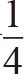
，或者三个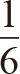
。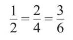
数学老师可能曾经对你说过：“计算分数，先看分母，再看分子。”这句话的深层含义就是指分数的等值特征。
这种方法也可以把分数转换成小数。例如，
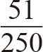
转换起来有些麻烦。但是，如果把分子和分母都乘以4，就可以得到：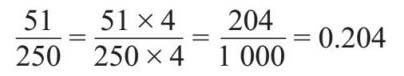
转换成等值分数之后，接下来要思考的是，能否把分母乘以某数而得到10的倍数。怎样才能判断出来呢？
为了检验这一点，我们需要理解素数的概念。一直以来，它都让数学家为之着迷。简单讲，素数是指只有两个因数的自然数。例如8可以被1、2、4和8整除，它有4个因数，显然它不是素数。5有两个因数，1和5，所以它是素数。1的因数只有一个，所以它也不是素数，因为1不符合只能被1和这个数本身整除的条件。所以，开始的几个素数是2,3, 5, 7, 11, 13, 17, 19, 23。
素数之所以如此令人着迷，是因为下面这个算术基本定理，即每个自然数都可以写成素数的乘积，但是这样的写法只有一种。例如：
30=2×3×5
30只能写成这几个素数的乘积，所以我们把2、3和5称为30的素因数。对我来说，素数就像数学DNA（脱氧核糖核酸）：每个数字都是独一无二的，并且只有一组素因数，没有双胞胎，也不用担心克隆！即使像223 092 870这样大的数，也只包含一组素因数（2×3×5×7×11×13×17×19×23）。
那么，这些对于分数有什么帮助？当把分数转换成小数时，为获得有限的小数位数，我们需要将它的分母变为10的倍数。10的素因数是：
10=2×5
为了得到100的素因数，可以写出下面的式子：
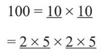
所以，100的素因数与10一样，都是2和5（只是多乘了几遍而已）。我们可以看到，对于10的任一倍数，其素因数中一定有2和5。因此，如果分母的素因数是2或5的某种组合，那么就有办法将它乘以某数，从而转换成10的倍数。上面的例子中对于分母是250的分数，我们可以将250分解为：
250=2×5×5×5
式中只有2和5。将这个数乘以4，即2×2，得到1 000。如果分母为240，我们可以将240分解为：
240=2×2×2×2×3×5
式子里面包含一个3，所以简单来说，对于任何分数，只要它的分母为240，转换后的小数一定是无限延伸的。例如：
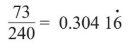
同时，我们还知道：
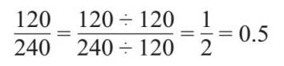
对于这个分数，当把它化成最简单的形式时，分母只包含2或5，所以它可以转换成有限位数的小数。
我们在研究分数的时候，发现它们的算术运算是遵循一定的顺序进行的。在做加法或减法前，我们需要把所有分数的分母统一。为了最有效地做到这一点，我们会寻找两个分母的最小公倍数。例如，如果我想计算
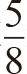
和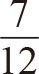
的和，就要先确定8和12的最小公倍数，结果显然是24。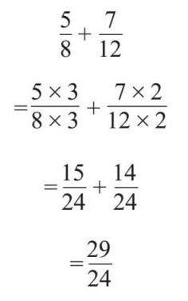
这是一个头重脚轻的假分数，因为分子大于分母。由于某种原因，这种数字在初等数学中是不成立的，只有达到英国普通高中水平或同等水平以上才成立。我想，这是因为带分数一目了然，更容易理解，但假分数进行计算更容易。为了把一个假分数转换成一个带分数，需要认识到
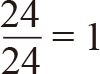
。这意味着：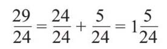
减法也可以按照类似的方法计算：
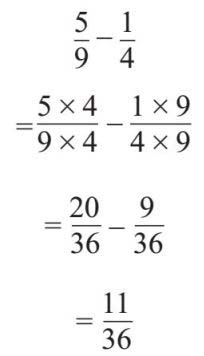
36是4和9的最小公倍数，等值转换将两个数变为分母为36的分数。
乘法的计算方法很直接，即分子乘以分子，分母乘以分母。例如：
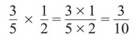
值得注意的是，将一个数乘以真分数，数值会变小。下面，我举一些例子来帮助读者更好地理解分数的乘法。可以看到，乘以
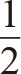
等于除以2，同样，乘以 等于除以3。这种关系叫作倒数关系。2和 彼此互为倒数，如果我把它们以适当的形式写下来，就可以看得更清楚了。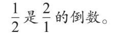
这种方法很方便，因为除以一个数与乘以它的倒数是等效的：
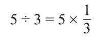
我可以用这个方法来做分数的除法：
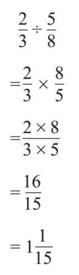
15的素因数是3和5，所以
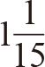
转化成小数时后面的数15字是重复的。素数之所以受到数学家的广泛关注，除了算术基本定理之外，还有一个原因就是，至今还没有人发现素数的模式或推导公式。很多人都做过尝试。例如，法国牧师马林·梅森（Marin Mersenne，1588—1648）用下面这个公式计算了一系列数字：
M n =2n –1
第一个数是1，此时n 为1，21 –1=1。第二个数是3，此时n =2，22 –1=3。以此类推，就有了下面的数字：
1, 3, 7, 15, 31, 63, 127, 255, 511, 1 023, 2 047…
梅森指出，根据这个公式算出的一些数字是素数，例如3、7、31和127，它们是数列中的第二、第三、第五和第七个数字。2、3、5和7本身就是素数，所以看起来，如果将素数代入n ，按照公式计算后就应该得到素数。但是7之后的素数是11，而按照公式算出M 11 =2 047，显然它不是素数，因为2 047=23×89。
靠人工识别较大的素数很困难。例如，M 107 是一个33位数字，把它分解成数字的组合并判断它的因数是什么将非常耗时。
进入数字时代，我们有了计算机这个工具，它可以完美地完成计算，并且不知疲倦。20世纪50年代早期，人们用计算机找到的梅森数的位数超过了百位。1999年，第一个百万位数的梅森数被发现。当前的最大记录是M 74 207 281 ，它的值超过2 200万位数。
这有什么用呢？数学家总是会出于对事物的热爱而做研究。但是，素数也是现代加密方法的基石。如果我想通过互联网发送一个号码，比如我的信用卡信息，那么心怀叵测的人就会拦截这个号码并花掉我的钱。
为了避免这种情况，因特网使用了加密的方法，用公钥来转换正在传输的号码。这个公钥是一个非常大的随机数字的组合。事实上，它们是由非常大的素数生成的。只有具备私钥的接收者，才能在合适的时间框架内还原这个过程。
网站地址的开头“https”，表示网站使用基于传输层安全协议的超文本传输协议来加密进出计算机的信息。所以，你之所以能快乐地在线购物，这一切都要归功于睿智的数学家。
在1903年的一次讲座上，美国数学家弗兰克·纳尔逊·科尔（Frank Nelson Cole，1861—1926）把M 67 分解为两个数相乘，这个数原本被认为是素数：
147 573 952 589 676 412 927
=193 707 721×761 838 257 287
然后，他亲自写出了这个乘法的计算过程，以证明结果。他算了一个小时。全场鸦雀无声，当科尔默默地回到座位上时，参会人员全体起立，对他报以经久不息的掌声。